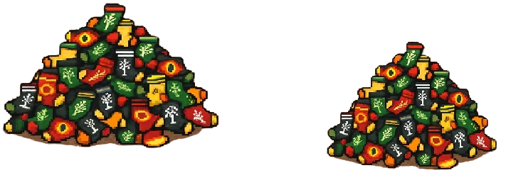
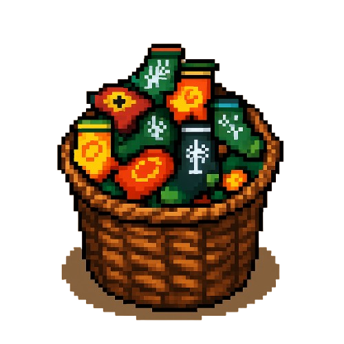
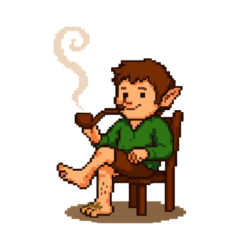
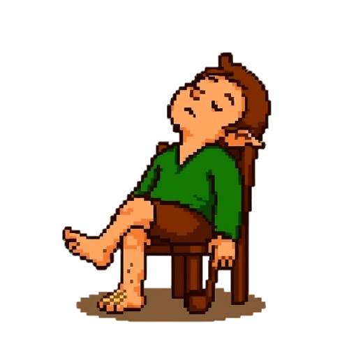
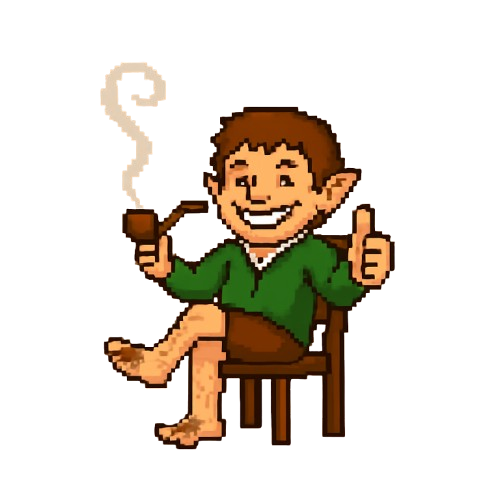

A Sociedade do Pé-Perdido
O que é A Sociedade do Pé-Perdido?
É um jogo para relaxar e perder alguns minutos. Tem a mecânica de Drag and Drop. O único objetivo do
jogo é curtir a música de fundo e jogar as meias dentro do cesto de meias.
A principal mecânica é o drag'n drop, usada para gardar as meias dentro do cesto. O jogo não tem um
final explícito, nessa versão beta você precisa arrastar as meias para dentro do cesto e aproveitar o
cenário. Alguns pontos desse cenário podem desencadear diálogos específicos, dependendo do objeto que
você clica.
Nas brumas da manhã do Condado, uma lenda se ergue. Não de dragões ou anéis, mas do destino que aguarda
o jovem Dofro Algodeiro, sobrinho de Balbo Fio. Com a promessa de uma grande jornada à sua frente, Dofro
se vê preso em um impasse digno de canções: seu tutor, o sábio e implacável Balbo, impôs-lhe uma prova
final.
Á sua frente, erguem-se As Duas Pilhas, montanhas de meias que se acumularam ao longo de gerações, um
caos de lã e algodão que desafia a ordem e a paciência. Dofro sabe que sua aventura só pode começar
quando a ordem for restaurada e cada par de meias estiverem em seu devido lugar.
Balbo, com um olhar que
tem 111 anos de experiência, impôs a missão, dizendo que é uma prova de caráterm de disciplina e ordem,
a primeira lição de qualquer grande jornada.
... mas no fundo, Dofro suspeita que a verdadeira motivação é porque as pilhas estão bloqueando o
caminho para a dispensa do segundo café da manhã.
Como Jogar
O primeiro passo que se deve dar no jogo é clicar em alguma das duas pilhas que estão disponíveis no
cenário.

Assim, o jogo vai gerar uma meia em um ponto aleatório do cenário e o objetivo é você ficar atento,
identificando onde a meia foi gerada, clicando e arrastando a mesma para o cesto de roupas.

O cenário possui alguns pontos que podem ativar o diálogo.
Nessa versão Beta, todos os objetos
que
disparam algum diálogo serão listados aqui no site, mas conforme as versões forem lançadas, novos
objetos vão disparar ações especificas e ficaram a sua mercê para descobrí-los.
Entrando na parte de apreciação do cenário, o protagonista também ativa animações específicas dependendo da ação que o jogador fizer.
  Gostou do que viu até agora?
O jogo ainda está em desenvolvimento, mas caso se interesse, pode entrar em contato comigo.
Todos os meus dados de contato estão no rodapé!
Meias que podem ser encontradas